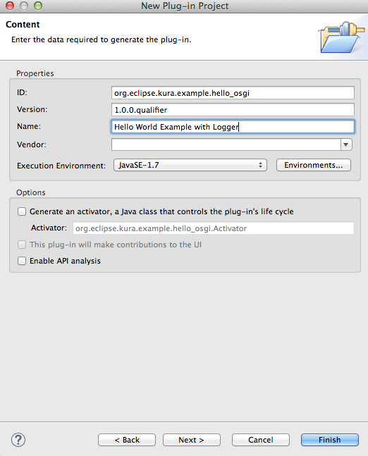
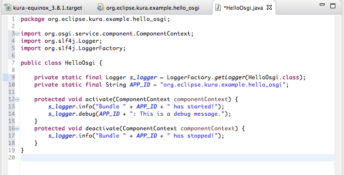
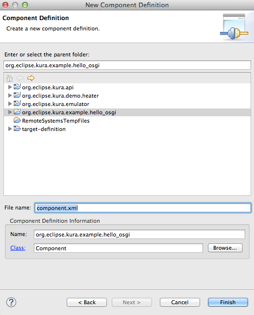
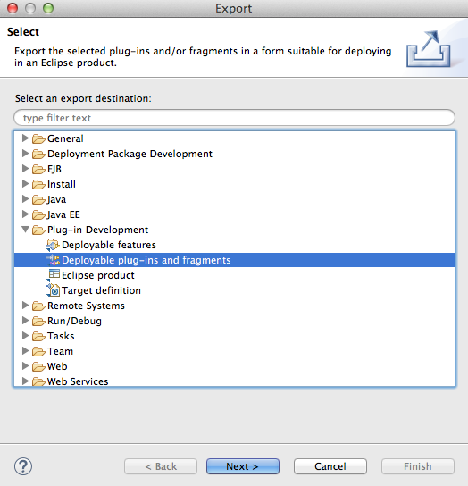

Hello World Application
Overview
This section provides a simple example of how to create a Kura “Hello World” OSGi project using Eclipse. With this example, you will learn how to perform the following functions:
-
Create a plugin project
-
Consume the Kura Logger service
-
Write an OSGi Activator
-
Export a single OSGi bundle (plug-in)
-
Create a Deployment Package
Prerequisites
Setting up the Kura Development Environment
Hello World Using the Kura Logger
Create Hello World Plug-in
In Eclipse, create a new Plug-in project by selecting File | New | Project. Select Plug-in Development | Plug-in Project and click Next.

Your screen should display the New Plug-in Project dialog box as shown in the following screen capture. Enter your project a name, such as “org.eclipse.kura.example.hello_osgi”, in the appropriate field. Under Target Platform, ensure that the an OSGi framework option button is selected and set the variable to standard as shown below. You can also (optionally) add projects to a working set. To continue, click Next.

In the next New Plug-in Project menu (shown below), change the Name field to a descriptive name, such as “Hello World Example with Logger”.

Also, verify that the Execution Environment list is set to match the Java JVM version running on the target device (JavaSE-1.8 or JavaSE-11). To determine the JVM version running on the target device, log in to its administrative console and enter the command
java –version
Finally, uncheck the Generate an activator, a Java class that controls the plug-in’s life cycle option button. For the purposes of this example, a single class will be used. An Activator class will not be created; instead, OSGi Declarative Services will be used to start and stop the bundle.
Click Finish.
If the Open Associated Perspective pop-up window (shown below) appears for adding Plug-ins and Error Log views, select Yes or No depending on your development requirements.

You should see the new project in the My Projects working set in the Package Explorer (or Project Explorer). Also, you will see the MANIFEST.MF was automatically opened in the Manifest Editor. An OSGi bundle is a regular Java .jar file that contains Java code and resources and a custom Manifest and an Activator.
Add Dependencies to Manifest
First, you will use the Manifest Editor in Eclipse to add some dependencies. Click the Dependencies tab at the bottom of the editor screen and then click the Automated Management of Dependencies heading to expand it.

Under Automated Management of Dependencies, click Add. In the Select a Plug-in field, enter org.eclipse.osgi.services. Select the plug-in name and click OK.

Note that this operation is very much like adding standalone jars to the buildpath by including the ‘-cp’ argument to javac. However, in this case you are telling Eclipse where to find these dependencies the “OSGi way”, so it is aware of them at compile time. Click Add again and use the same procedure to add the following dependency:
- slf4j.api
You should now see the list of dependencies. Save changes to the Manifest.

Create Java Class
Now you are ready to start writing a simple Java class. Right-click the org.eclipse.kura.example.hello_osgi project. Select New | Class. The New Java Class window appears as shown below. Set the Source folder to org.eclipse.kura.example.hello_osgi/src. Set the Package field to org.eclipse.kura.example.hello_osgi, set the Name field to HelloOsgi, and then click Finish.

Write the following code for the new class. You can copy and paste the code provided below into your newly created Java class file.
package org.eclipse.kura.example.hello_osgi;
public class HelloOsgi {
private static final Logger s_logger = LoggerFactory.getLogger(HelloOsgi.class);
private static final String APP_ID = "org.eclipse.kura.example.hello_osgi";
protected void activate(ComponentContext componentContext) {
s_logger.info("Bundle " + APP_ID + " has started!");
s_logger.debug(APP_ID + ": This is a debug message.");
}
protected void deactivate(ComponentContext componentContext) {
s_logger.info("Bundle " + APP_ID + " has stopped!");
}
}
The activate() method is the entry point when the bundle in started. The deactivate() method is the entry point when the bundle is stopped.
Notice the use of the private LoggerFactory.getLogger() method. If the LoggerFactory method is present (running) in the OSGi framework and your hello_osgi bundle is started, your activate method is called, and you can simply access the service by calling the getLogger() method.
One convenient feature of Eclipse, auto-completion, is worth mentioning here. If you type ‘s_logger.’ (instance name of the “LoggerFactory.getLogger” method) and stop after the period, it will show you a list of methods implemented in that class. The examples above show two different methods used for logging messages. Logger methods include: “error”, “warn”, “info”, “debug”, and “trace”, which represent increasingly lower (more detailed) levels of log information. Logger levels should generally be used to represent the following conditions:
-
ERROR - A serious problem has occurred that requires attention from the system administrator.
-
WARNING - An action occurred or a condition was discovered that should be reviewed and may require action before an error occurs. It may also be used for transient issues.
-
INFO - A report of a normal action or event. This could be a user operation, such as "login completed", or an automatic operation, such as a log file rotation.
-
DEBUG - A debug message used for troubleshooting or performance monitoring. It typically contains detailed event data including things an application developer would need to know.
-
TRACE - A fairly detailed output of diagnostic logging, such as actual bytes of a particular message being examined.
Resolve Dependencies
At this point, there will be errors in your code because of unresolved imports.
Select the menu Source | Organize Imports to resolve these errors. Because you added the “org.slf4j” to your dependency list, you will be prompted to choose one of two potential sources for importing the “Logger” class. Select org.slf4j.Logger and click Finish.

Now the errors in the class should have been resolved. Save the HelloOsgi class.

The complete set of code (with import statements) is shown below.
package org.eclipse.kura.example.hello_osgi;
import org.osgi.service.component.ComponentContext;
import org.slf4j.Logger;
import org.slf4j.LoggerFactory;
public class HelloOsgi {
private static final Logger s_logger = LoggerFactory.getLogger(HelloOsgi.class);
private static final String APP_ID = "org.eclipse.kura.example.hello_osgi";
protected void activate(ComponentContext componentContext) {
s_logger.info("Bundle " + APP_ID + " has started!");
s_logger.debug(APP_ID + ": This is a debug message.");
}
protected void deactivate(ComponentContext componentContext) {
s_logger.info("Bundle " + APP_ID + " has stopped!");
}
}
For more information on using the Simple Logging Facade for Java (slf4j), see the Logger API.
Switch back to the Manifest Editor. Under Automated Management of Dependencies, ensure the Import-Package option button is selected. Click the add dependencies link to automatically add packages to the dependencies list based on the “import” statements in your example code. Save changes to the Manifest again.

Create Component Class
Right-click the example project and select New | Other. From the wizard, select Plug-in Development | Component Definition and click Next.
Warning
This option is available only if the Plug-in Development Environment (PDE) is installed in Eclipse (plugins can be installed into Eclipse IDE by searching the name in the Eclipse Marketplace under the Help menu).

In the Class field of the New Component Definition window shown below, click Browse.

Enter the name of your newly created class in the Select entries field. In this case, type the word “hello”, and you will see a list of matching items. Select the HelloOsgi class and click OK.

In the Enter or select the parent folder field of the New Component Definition window, add "/OSGI-INF" to the existing entry (e.g., org.eclipse.kura.example.hello_osgi/OSGI-INF). Then click Finish.

After the Component class has been created, it will open in the Workspace. In the Overview tab, the Name and Class point to our Java class. Set the Activate field to activate and set the Deactivate field to deactivate. Doing so tells the component where these OSGi activation methods are located. Then save the Component class definition file.

Deploying the Plug-in
The next few sections describe how to create a stand-alone JAR file as a deployable OSGI plug-in and how to create an installable Deployment Package.
An OSGi bundle is a Java archive file containing Java code, resources, and a Manifest.
A Deployment Package is a set of resources grouped into a single package file that may be deployed in the OSGi framework through the Deployment Admin service and may contain one or more bundles, configuration objects, etc.
Export the OSGi Bundle
Your bundle can be built as a stand-alone OSGi plug-in.
To do so, right-click the project and select the Export menu. This is equivalent to running javac on your project. From the wizard, select Plug-in Development | Deployable plug-ins and fragments and click Next.

Under Available Plug-ins and Fragments of the Export window, ensure the newly created plug-in is selected. Under Destination, select the Directory option button and use the Browse button to select an appropriate place to save the JAR file on the local file system.
NOTE: During the deployment process that is described in the following section, you will need to remember the location where this JAR file is saved.
Click Finish.

This will create a JAR file in the selected directory (e.g., /home/joe/myPlugins/plugins/org.eclipse.kura.example.hello_osgi_1.0.0.jar).
Create a Deployment Package
Rather than creating a stand-alone plug-in, you can also create a Deployment Package that contains multiple bundles, configuration elements, etc. that can be deployed into an OSGi framework. In this example, you will simply create a Deployment Package containing the “hello_osgi” bundle. This step requires mToolkit to be installed. (See Kura Setup for instructions on setting up the Eclipse development environment.)
Right-click the project and select New | Folder. Select the org.eclipse.kura.example.hello_osgi project and enter a folder named “resources”.

Then repeat this step to create a folder named “dp” under the resources folder. The resources/dp folder will be used to store the Deployment Package.

Select File | New | Other. Select OSGi | Deployment Package Definition and click Next.

Ensure that the Target folder field of the New dpp file window is set to the /[project_name]/resources/dp folder. In the File name field, enter the name for the new Deployment Package file to create, such as “hello_osgi”. A version number can also be entered in the Version field. Then click Finish.

Under the resources/dp folder in your project, verify that the [filename].dpp file was created. This is a Deployment Package Project that provides information needed to create the Deployment Package, such as its output directory, ant build file, etc.

Select the Bundles tab and then click New. In the Bundle Path column, select the browse icon. Browse to the bundle’s JAR file created earlier. Select the file and click Open. Doing so should populate the remaining columns as needed.

Save changes to the deployment package file.
In the resources/dp folder, right-click the .dpp file. Select Quick Build. A new [filename].dp file will be created in the same directory. This is the final Deployment Package that can be installed on a remote target system.

In conclusion, you were able to create a new bundle from scratch, write the Java code and Activator, modify the Manifest, and build the plug-in and/or Deployment Package that can be used in a Kura environment.
The next steps will be to test your code in an Emulation mode and/or to deploy your code to a target system running Kura. See Testing and Deploying Bundles to continue with those steps.